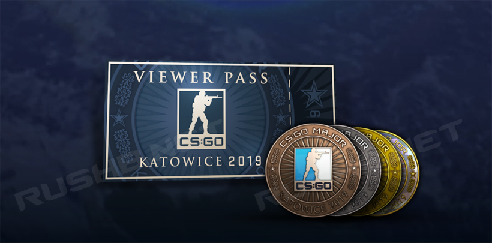
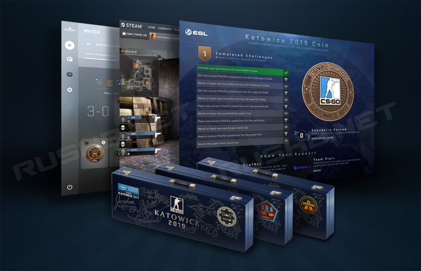
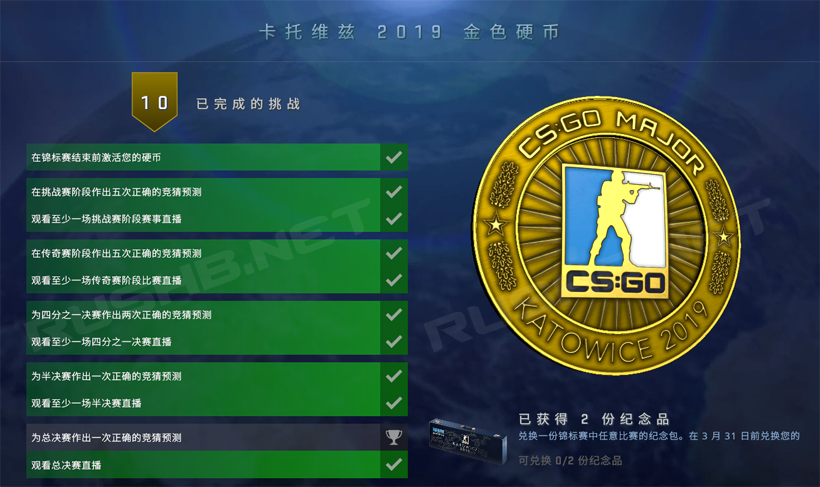
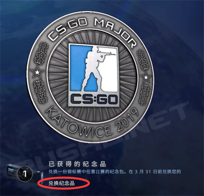
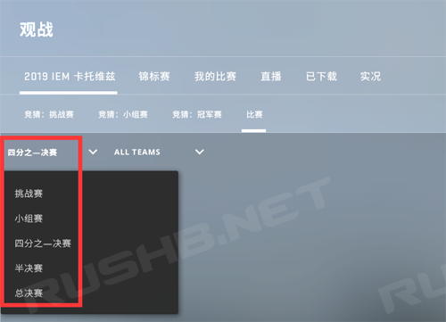
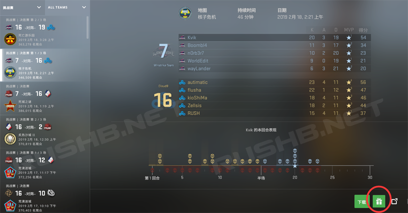

CSGO RushB中文网
CSGO RushB中文网
根据CSGO官方说法，从IEM卡托维兹2019开始，今后的CSGO Major大赛都将采用观众通行证（Viewer Pass）的方式让玩家参与，代替以往的购买贴纸参与预测。8月的CSGO Major大赛StarLadder柏林2019也将推出新的观众通行证。
CSGO Major大赛StarLadder柏林2019赛程及更多信息请看这里。
CSGO Major大赛StarLadder柏林2019通行证介绍请看这里。
和以往不同，只看比赛不能掉落纪念包，想要获得纪念包必须购观众通行证并激活使用，完成指定任务升级硬币才能获得纪念包。如果你之前错过了2月份IEM卡托维兹Major大赛，但想参与StarLadder柏林2019，不妨先了解下
注意：只观看比赛并不需要购买通行证，但无法获得硬币和纪念包。
Major观众通行证一般会在正赛前一个星期左右更新到游戏里，StarLadder柏林2019的话大概在8月14日左右，到时便可以购买并激活参与活动。
以下是Major观众通行证相关介绍及问答，包括赛事硬币升级和纪念包获得方法，方便第一次接触的玩家理解：
IEM卡托维兹2019观众通行证
观众通行证
什么是观众通行证？
随着IEM卡托维兹2019推出，观众通行证是一款在游戏内可购买的道具，购买并激活使用的玩家可获得以下功能/物品：
- 一枚可升级的赛事硬币
- 可获得代币，用于兑换纪念包
- 比赛预测
- Major期限无限制的战队喷漆/涂鸦
- SteamTV独家战队表情

在StarLadder柏林2019推出了“观众通行证+3”，可额外获得3个纪念包代币，即可多兑换3个纪念包。
如何获得观众通行证？
观众通行证可以在Major期间在CSGO游戏客户端内或Steam商店购买，价格为9.99美元，即69元人民币，购买的通行证可以在一周后作为礼物送给好友。
StarLadder柏林2019观众通行证涨价了，为12.99美元，差不多90人民币，“观众通行证+3”版本则为19.99美元，约140人民币。
我可以在CSGO账户上激活多个观众通行证吗？
不可以，每个CSGO帐户/Steam帐户只能激活一次。
Pick’Em战队预测
必须要购买激活通行证才能参加Pick’Em战队预测吗？
是的，从IEM卡托维兹2019开始，玩家需要购买激活观众通行证才能参与Major挑战赛、小组赛和冠军赛阶段预测。
战队预测还需要另外购买贴纸吗？
不用，和以往不同，只要玩家激活通行证后即可直接参与预测。
如何参与战队预测？
在Major期间内，游戏里点击“观战”或库存界面点击赛事硬币选择“参与竞赛挑战”即可进入预测界面，注意需要在每个赛事阶段开始前选择好队伍。
赛事币升级
如何升级我的赛事硬币？
类似大行动硬币，玩家激活通行证后可获得赛事铜币，在Major期间内可升级成银币、金币及钻石币，通过完成一定数量的预测和观赛挑战，即可升级。
StarLadder柏林2019观众通行证挑战任务与上届不同，一共有16个挑战任务。任务主要为完成各服役地图游戏回合数、达成观赛以及参与队伍预测。以下为硬币升级条件：
- 银币：完成8个挑战
- 金币：完成12个挑战
- 钻石币：完成所有16个挑战
*Major结束后无法升级
具体可以在库存界面点击赛事硬币，并选择“查看赛事币挑战项”查看具体内容：
IEM卡托维兹2019硬币及挑战任务
如何装备/更改战队喷漆（涂鸦）？
作为通行证的功能之一，玩家可在Major期间无次数限制使用战队喷漆/涂鸦。在库存界面点击赛事硬币，并点击“选择战队涂鸦”，即可装备或更换战队喷漆。
Major结束了，但我的挑战还差一点，还能升级吗？
不可以，所有挑战任务请按时完成。
完成了挑战却没有显示完成，如何解决？
“赛事币挑战项”界面的任务可能会延时显示完成，比如观看直播挑战，如果你已完成挑战却没有限时完成，可能需要等待几个小时。
如果你是用Twitch直播平台观看比赛，请确保关联了Steam账号（设置链接）。要完成观看直播任务，你只需要确保观看其中一场比赛（地图）的连续几个回合，并在晚些时候查看是否完成。
纪念包
我是否需要观众通行证才有资格获得纪念包？
是的，从IEM卡托维兹2019开始，想要获得纪念包的玩家必须在自己的账户上激活观众通行证。以前的获得方法不再有效，即只观看Major比赛不会掉落纪念包。
已激活通行证，如何获得纪念包？
如果你一开始买的是“观众通行证+3”，那么直接获得3个纪念包代币，即可兑换3个纪念包，每个代币可兑换一个纪念包。
另外每当玩家完成挑战任务将自己的赛事币升级时，可获得一个纪念包代币，如果升级到钻石币，那么最多可获得3次纪念包兑换，硬币升级方法见上方。
还有，激活通行证的玩家可以直接购买代币兑换纪念包。
如何兑换纪念包？
玩家可以兑换当前Major已完成的比赛纪念包，进入通行证界面，点击硬币下方的“兑换纪念包”。

然后会进入观战界面的“比赛”栏，选择要兑换的比赛，点击左边的下拉框可以其他选择赛事阶段的比赛。

选择比赛后，点击界面右下角的“礼物”按钮，就可以兑换选择当前比赛的地图纪念包。

兑换的纪念包可以出售和交易吗？
可以，纪念包可以在Steam社区市场出售或者与好友交易。
纪念包可以留到以后兑换吗？
纪念包兑换是有时限的，玩家请在指定期限内兑换纪念包，否则过期后无法获得。